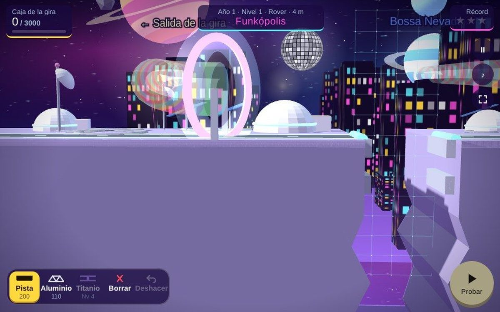
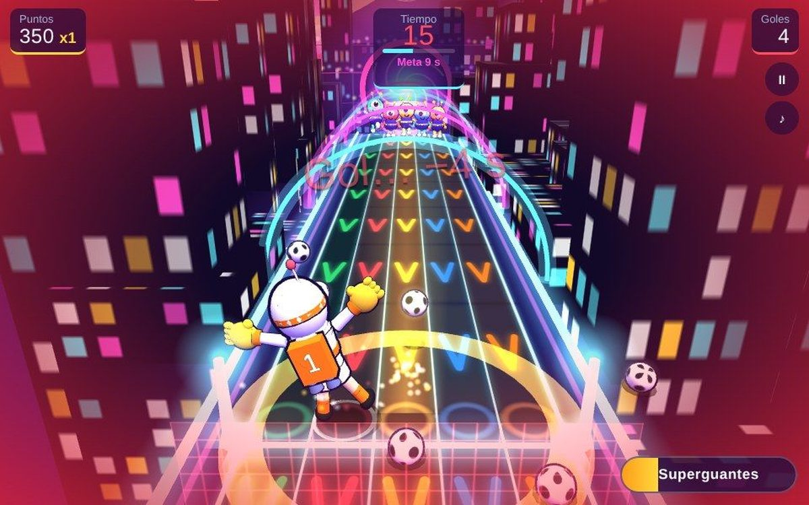
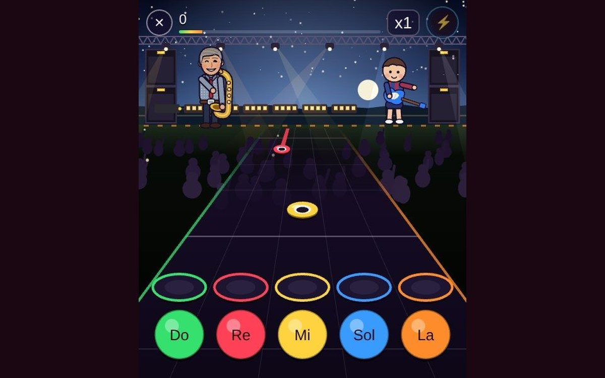
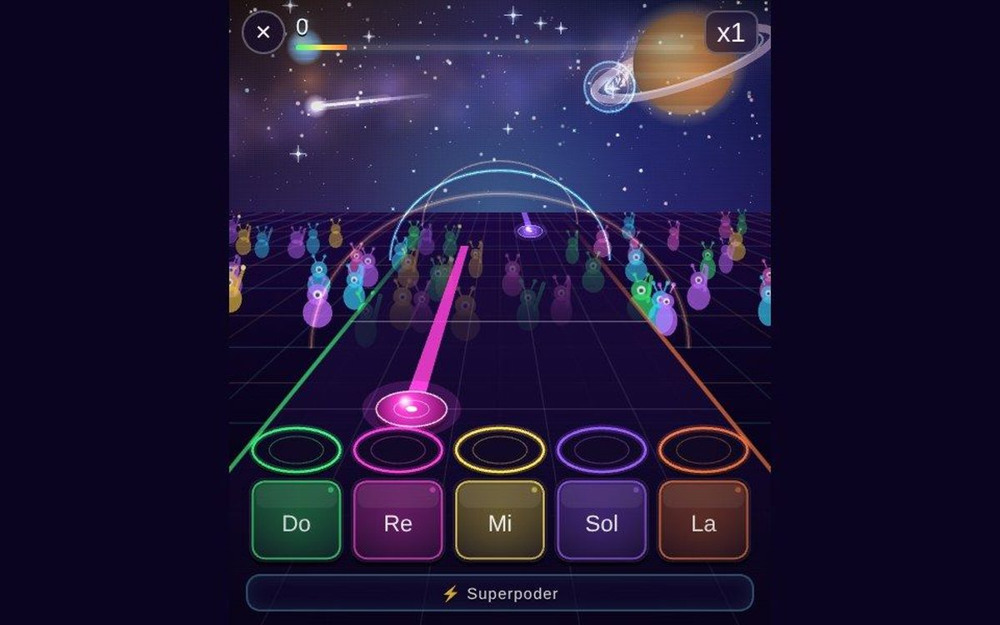
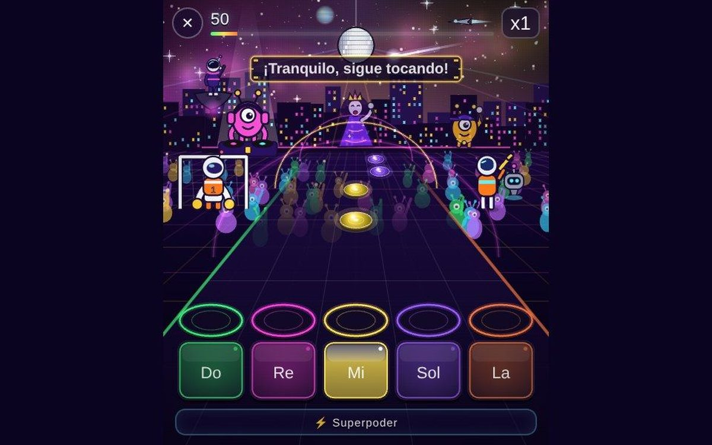

Juegos de ritmo online
Juegos de ritmo musical para jugar en el navegador: pulsa las notas a tiempo en juegos tipo Guitar Hero, toca la guitarra en el año 3000 o para balones al compás de la canción.
Todas las canciones son originales. Se juegan en móvil y ordenador, gratis y sin anuncios.
 Ruta CósmicaJuego de naves espaciales en 3D: pilota la Centella de Lyra entre planeta y planeta, recoge las notas perdidas, cruza…
Ruta CósmicaJuego de naves espaciales en 3D: pilota la Centella de Lyra entre planeta y planeta, recoge las notas perdidas, cruza… Tiradora CósmicaShooter de francotiradora en 13 planetas musicales: apunta arrastrando, dispara con un toque y haz bailar a los…
Tiradora CósmicaShooter de francotiradora en 13 planetas musicales: apunta arrastrando, dispara con un toque y haz bailar a los…
Constructor CósmicoJuego de construir puentes en el espacio: diseña un puente para que cruce una caravana musical de vehículos. Cada…
Paradón CósmicoJuego de portero en 3D al ritmo de la música: eres un astronauta bajo palos, con cinco calles y una lluvia de balones…
Martín, leyenda del rockJuego tipo Guitar Hero para el navegador: Martín, un abuelo guitarrista, toca un álbum de 10 canciones de rock…
Supernova GuitarJuego de guitarra online ambientado en el año 3000: los clásicos del siglo XX suenan a sintetizador, nu-disco, house y…
Cosmic GuitarEl concierto final de la saga cósmica: un juego de ritmo musical en el que tocas las canciones de los trece planetas…
Más colecciones
Jocs en català online i gratisJuegos relajantes onlineJuegos de motos, coches y karts Todos los juegos